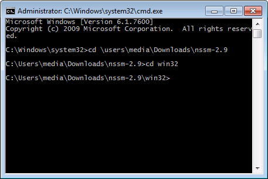
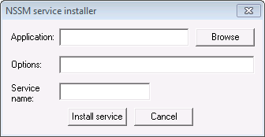
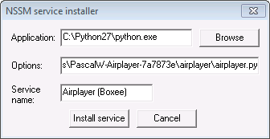
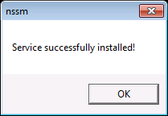
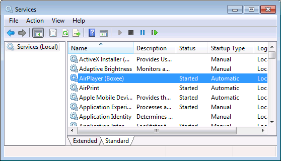

Configuring Airplayer to run as a Windows Service
Guide contributed by smaccona.
- First of all, get Airplayer working from the command line, so that you
know your configuration is correct.
- Download NSSM and
uncompress it to a directory of your choice. In my example, it's in
C:\Users\media\Downloads\nssm-2.9
- Open a command prompt. If running Windows Vista or Windows 7,
you will need to do this in elevated mode (using "Run As Administrator").
To do this quickly, hit the Windows key, type
cmd,
then hold down the Shift and Control keys while you
press the Enter key.
- In the command prompt, navigate to the location you have extracted
NSSM to and then into the directory called
win32 (the
32-bit executables should work fine on both 32- and 64-bit installations
of Windows, but if you have trouble, try the win64 directory
instead). Your command prompt window should look something like
this at this point:

- Type
nssm.exe install and hit
Enter. You should see the following dialog window:

- In the Application textbox, enter the full path to
python.exe or use the browse button to locate it. In my
installation, it's at C:\Python27\python.exe.
- In the Options textbox, enter the full path to the
airplayer.py script in your Airplayer directory.
In my installation, this is C:\Users\media\Downloads\PascalW-Airplayer-7a7873e\airplayer\airplayer.py
- In the Service name textbox, enter a name for your service.
I called mine Airplayer (Boxee)
- Your dialog should now look something like this:

- Hit the Install service button to install the service.
- Provided you're running at administrator level and have the
necessary privileges, you should get a message that the service was
created:

- Navigate to Start -> Control Panel -> Administrative Tools ->
Services. You should see your newly-created service in the list.

To start it, just hit the button with the Play icon (or
right-click on it and click Start). If the service's
Startup Type is set to Automatic, then the service
should start automatically when your computer boots.